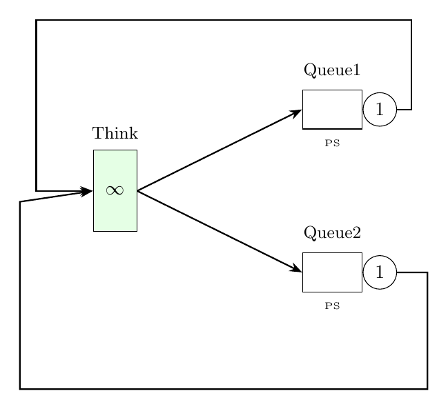

Tutorial 8: Optimizing Performance Metrics
This example shows how to optimize a performance metric using LINE. We find the optimal routing probabilities that minimize average response times for two parallel processor sharing queues in a closed network.

model = Network('LoadBalCQN');
% Block 1: nodes
delay = Delay(model,'Think');
queue1 = Queue(model, 'Queue1', SchedStrategy.PS);
queue2 = Queue(model, 'Queue2', SchedStrategy.PS);
% Block 2: classes
cclass = ClosedClass(model, 'Job1', 16, delay);
delay.setService(cclass, Exp(1));
queue1.setService(cclass, Exp(0.75));
queue2.setService(cclass, Exp(0.50));
% Block 3: topology
P = model.initRoutingMatrix;
P{cclass}(queue1, delay) = 1.0;
P{cclass}(queue2, delay) = 1.0;
model.link(P);
% Block 4: solution - optimization
objFun = @(p) evalOptimization(p, model, P, cclass, delay, queue1, queue2);
p_opt = fminbnd(objFun, 0, 1);
function R = evalOptimization(p, model, P, cclass, delay, queue1, queue2)
P{cclass}(delay, queue1) = p;
P{cclass}(delay, queue2) = 1-p;
model.relink(P);
R = MVA(model,'exact','verbose',false).getAvgSysRespT;
end// Example 8: Optimizing performance metrics
val model = Network("LoadBalCQN")
// Block 1: nodes
val delay = Delay(model, "Think")
val queue1 = Queue(model, "Queue1", SchedStrategy.PS)
val queue2 = Queue(model, "Queue2", SchedStrategy.PS)
// Block 2: classes
val cclass = ClosedClass(model, "Job1", 16, delay)
delay.setService(cclass, Exp(1.0))
queue1.setService(cclass, Exp(0.75))
queue2.setService(cclass, Exp(0.50))
// Block 3: topology
val P = model.initRoutingMatrix()
P.set(cclass, cclass, queue1, delay, 1.0)
P.set(cclass, cclass, queue2, delay, 1.0)
model.link(P)
// Block 4: solution - optimization using external optimizer
fun objFun(p: Double): Double {
P.set(cclass, cclass, delay, queue1, p)
P.set(cclass, cclass, delay, queue2, 1.0 - p)
model.relink(P)
return MVA(model, "method", "exact").avgSysRespT[0][0]
}
// Use Apache Commons Math or similar for optimizationfrom line_solver import *
from scipy import optimize
model = Network('LoadBalCQN')
# Block 1: nodes
delay = Delay(model, 'Think')
queue1 = Queue(model, 'Queue1', SchedStrategy.PS)
queue2 = Queue(model, 'Queue2', SchedStrategy.PS)
# Block 2: classes
cclass = ClosedClass(model, 'Job1', 16, delay)
delay.set_service(cclass, Exp(1))
queue1.set_service(cclass, Exp(0.75))
queue2.set_service(cclass, Exp(0.50))
# Block 3: topology
P = model.init_routing_matrix()
P.set(cclass, cclass, queue1, delay, 1.0)
P.set(cclass, cclass, queue2, delay, 1.0)
model.link(P)
def objFun(p):
P.set(cclass, cclass, delay, queue1, p)
P.set(cclass, cclass, delay, queue2, 1.0 - p)
model.relink(P)
R = MVA(model, method='exact', verbose=False).avg_sys_resp_t()
return R[0]
p_opt = optimize.fminbound(objFun, 0, 1)
print(f"Optimal routing probability: {p_opt}")Expected Output
Optimal routing probability: 0.6105